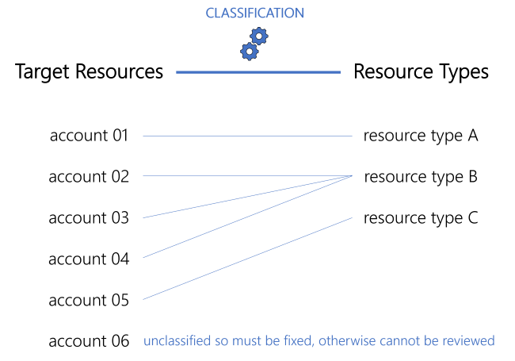
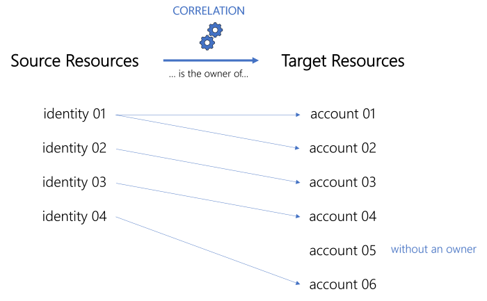
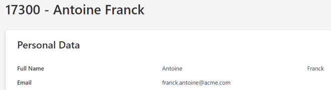
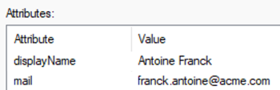
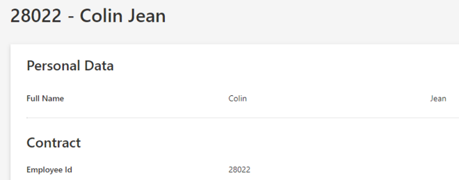
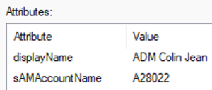
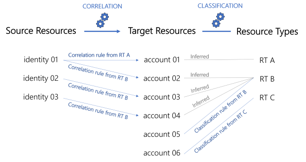

Categorize Resources
How to correlate managed systems' resources with identities, classifying resources into Create a Resource Type .
Overview
Managing resources can quickly become chaotic when the number of resources increases significantly. You will need to manage orphaned (without an owner) and unused accounts through resource reviews, and make sure that all accounts follow their owner's lifecycle. To do so, resources can be categorized, which for our purposes means two things. They are:
- correlated with their owners, so that accounts follow the corresponding identity's lifecycle.
For example, if a user leaves the company, then their account is deactivated accordingly.
- classified according to their intents, in other words you need to specify resources' functions or goals within the managed system, especially in terms of security;
For example, a basic user account (low-privileged) and an administrator account (high-privileged) have different intents. These two distinct account types are handled in different ways security-wise, and they represent different entitlements with different security measures applied.
Categorization is designed to help resource managers to easily identify a resource's owner and purpose.
For example, when Identity Manager spots an orphaned account, resource managers must be able to determine whether the account should have an owner, or if it is a service/technical account and thus does not need an owner.
Technical principles
Technically, Identity Manager uses the notion of resource types to categorize resources. A resource type is, in fact, a way to gather similar resources under one meaningful name, because they have the same intent.
Our example above would use a resource type
AD User (administration)to group all AD administrator accounts, andAD User (nominative)to group all AD basic user accounts.
Thus, a resource type is a name that informs users about the intent of a resource. As stated above, it serves to implement our two elements of categorization. This happens with two distinct sets of rules, one for correlation, and the other for classification.
Classification is a process that simply aims to assign a resource type to specific resources. A specific resource can only be assigned a single resource type. See the Entitlement Management topic for additional information.

Any resource that is unclassified will not be available for review.
Correlation is a process that aims to establish an ownership relationship between two resources. In most cases, an identity resource that becomes the owner of an account resource. See the Entitlement Management topic for additional information.

While an owner can possess several resources, a resource can have only one owner.
Some resources are orphaned (without an owner) for good reasons. For example service/technical accounts are often used by applications to access data held in Identity Manager or other managed systems and don't belong to a specific user.
As stated previously, both classification and correlation work through sets of rules.
For basic users, we have in Identity Manager:

For basic users, we have in the AD:
Thus our example could induce the following rules:
Classification Rules Correlation Rules all accounts from OU=Users 1. mail (from AD) = user's email
franck.antoine@acme.com = franck.antoine@acme.com
2. displayName = user's last name + user's first name
Antoine Franck = Antoine + Franck
For administrators, we have in Identity Manager:

For administrators, we have in the AD:
Thus our example could induce the following rules:
Classification Rules Correlation Rules all accounts from OU=Administrators 1. sAMAccountName = "A" + user's employee id
A28022 = A + 28022
2. displayName = "ADM" + user's last name + user's first name
ADM Colin Jean = ADM + Colin + Jean
Sometimes you may not know if your rules are always going to apply. Therefore, each rule expresses a certain level of confidence. Identity Manager will establish a priority order between rules based on the confidence rate, and will also act differently depending on whether the confidence rate is above or below 100%. See the Correlate Resources topic for additional information.
A resource type can have zero correlation rules, since accounts can be without owners. But a resource type with neither correlation nor classification rules serves no purpose.
Correlation triggers classification: a matching correlation rule for a given resource type will perform both actions of categorization: both correlating a resource with its owner, and classifying the resource at the same time.
See below this note.
Hence, integrators should start with correlation rules, and then write classification rules for any remaining uncorrelated resources.
In the same way, Identity Manager will apply correlation rules before classification rules.

Now that you have created resource types and their correlation/classification rules, you have created the first elements for your role model. See the Entitlement Management topic for additional information. The role model contains all the roles and rules which drive the entitlement assignment logic inside Identity Manager.
A role model is made up of Policy which contain roles, rules and resource types. Most often the default policy is enough. However, in more complex situations, additional policies can be created to separate groups of roles, rules and resource types. See the Create a Policy topic for additional information.
Participants and Artifacts
For a given managed system, integrators may need the help of the application owner who knows the application's users, entitlements and data model.
| Input | Output |
|---|---|
|
Create the Workforce Repository
(required) Create a Resource Type (required) Synchronize Data (required) |
Categorized resources Correlated accounts Orphaned account list |
Categorize Resources
Categorize resources by proceeding as follows:
- Create at least one Create a Resource Type ;
- Create the appropriate Correlate Resources ;
- Create the appropriate Classify Resources for accounts that do not have an owner.
Netwrix Identity Manager (formerly Usercube) recommends creating/modifying/deleting correlation and classification rules using Perform a Simulation in order to previsualize changes.
Next Steps
Once accounts are categorized, integrators can start to Create a Provisioning Rule .
Categorization also enables the Review Orphaned and Unused Accounts.